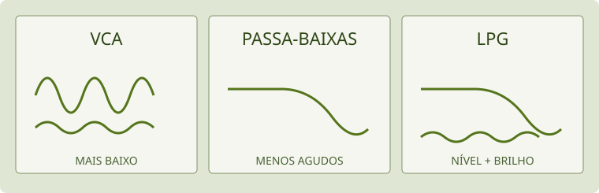

Manual do Usina · ALFA
English · Instalação · Aviso do alfa · Página inicial
Guia de uso da edição plugin/Standalone em preparação para v0.2.0-alpha.1. Rótulos e recursos devem ser conferidos na versão distribuída. A edição web e o APK têm interfaces e percursos próprios; este manual não promete paridade entre edições.
Capítulos
| Para consultar | Capítulo |
|---|---|
| Primeiro som, controles e performance | Este guia |
| Algoritmos, operadores, filtros e efeitos | Guia por módulo |
| FILTER 2, estéreo, LPG e captura | Vozes, filtros e captura |
| Criar rotas e comparar sete patches | Modulação na prática |
| Envio AUX e realimentação global | AUX e LOOP INSERT |
Você escolhe por onde começar e em que ritmo explorar. Este guia combina gestos, imagens e exemplos. Os nomes em maiúsculas são os que aparecem nos controles; cada termo é explicado quando entra no caminho.
SEU PONTO DE PARTIDA
O que você quer experimentar?
Palavras que aparecem na tela
- DAW
- Programa onde você organiza e grava música. O Usina também tem um aplicativo independente, chamado Standalone.
- Preset ou timbre
- Um conjunto de ajustes que você pode carregar como ponto de partida.
- Knob
- Controle circular. Arrastar muda seu valor.
- Macro
- Um controle que pode mover vários ajustes de uma vez.
- Modulação
- Uma fonte movimenta um ajuste. Por exemplo: fazer o filtro abrir e fechar sozinho.
Para consultar cada tipo de operador, filtro e efeito e localizar seus controles, abra o guia por módulo e mapa das telas.
Em cinco minutos
- Instale, abra uma pista de instrumento na sua DAW e carregue Usina. Arme a pista, selecione seu teclado MIDI e ligue a monitoração. No Standalone, escolha áudio e MIDI nas opções.
- Comece com o volume de saída baixo e a entrada de áudio muda. Escolha um timbre na biblioteca do topo. As setas percorrem os sons da categoria.
- Toque uma nota curta e depois uma longa. Selecione PLAY para concentrar a tela no gesto. Os manuais tocam o mesmo timbre.
- Mova uma macro e ouça. Uma macro só altera o que o preset endereçou; uma macro sem destino pode não mudar o som.
- Use SAVE para guardar uma versão sua antes de explorar. INIT começa de novo com uma senoide; não é um comando de desfazer.
Para uma primeira escuta, siga o percurso de timbres. Nenhum conhecimento de programação ou de FM é necessário para começar.
A tela e o caminho do som
O topo reúne biblioteca, INIT, SAVE, LOAD e as vistas SYNTH, FX, SEQ, CABINE e PLAY. Em SYNTH, a visão dos seis operadores mostra quem participa do algoritmo; selecionar um abre sua edição. As páginas inferiores separam OPERATOR, FILTER / EG2 / OUTPUT e MOD.
Pense em três escalas de trabalho:
- Operador: uma fonte sonora ou um processador, com frequência, nível e envelope próprios.
- Voz: o conjunto disparado por uma nota, combinando os operadores e o filtro.
- Instância: efeitos, entrada/realimentação e saída compartilhados pelo instrumento aberto.
O algoritmo decide quais operadores chegam à saída e quais alimentam outros. Um operador com nível alto pode não ser ouvido diretamente: ele pode estar modulando outro. A matriz USER permite desenhar ligações próprias. Mude uma ligação por vez e compare.

Mapa conceitual: uma seta significa que um sinal alimenta o próximo bloco. O desenho explica a relação; não reproduz a posição dos controles na tela.
Frequência, nível e envelope
RATIO relaciona a frequência do operador à nota tocada: x1 acompanha a fundamental; razões maiores criam relações mais agudas. COARSE escolhe a relação principal, FINE a refina. DETUNE é um desvio fino e TRANS transpõe. FIXED usa frequência fixa; não espere o mesmo acompanhamento do teclado. Os valores apagados não estão ativos naquela configuração.
LEVEL de uma portadora muda seu volume; em um modulador, muda sobretudo o quanto ele transforma o operador seguinte. VEL define a influência da força da nota. O teclado e o controlador podem nomear oitavas de modos diferentes; compare pela altura ou pelo número MIDI ao diagnosticar uma diferença.
ADSR e ADR
| Controle | O que se ouve |
|---|---|
| ATTACK | Tempo para o início crescer |
| DECAY | Tempo para descer do pico ao nível sustentado |
| SUSTAIN | Nível mantido enquanto a nota continua; não é uma duração |
| RELEASE | Tempo de saída depois de soltar |
Nas edições com edição direta do gráfico, as alças representam o pico do ataque, o fim do decaimento e o fim do release. Três pontos móveis podem editar quatro parâmetros: o ponto D/S altera tempo na horizontal e nível na vertical. A parte sustentada dura o tempo da tecla, não um tempo fixo desenhado no gráfico.

Exemplo ilustrativo, sem escala de tempo fixa. A altura representa nível; a largura representa tempo.
ATK CURVE, CURVE e REL CURVE mudam a trajetória. = DEC usa no release a curva do decay. ADR percorre ataque, decay e release sem manter o sustain pela tecla. RETRIG escolhe uma fonte que dispara novamente o envelope enquanto a nota está pressionada. RATE KEY faz os tempos variarem com a altura.
Modos de operador
Os controles A–D mudam de significado conforme MODE. Use seus rótulos, não a posição do knob como lembrança de uma função fixa.
| Modo | Para explorar | Controles específicos |
|---|---|---|
| FM | Uma onda que recebe modulação de fase de outro operador | FB, WIDTH |
| RING | Multiplicação e relações metálicas entre sinais | DEPTH, SHAPE |
| FILTER | Filtrar o sinal do algoritmo e misturar o oscilador | TYPE, OSC MIX, CUTOFF, RESO |
| FILTER FM | Combinar filtragem e modulação no operador | TYPE, CUTOFF, RESO |
| FOLD | Dobrar a forma e aumentar sua complexidade | GAIN, OSC MIX, BIAS |
| EFFECT | Processamento dentro do algoritmo | FX, OSC MIX; os demais controles dependem do efeito |
| BYPASS | Passagem do sinal recebido | Sem controles de modo próprios |
| MUTE | Silenciar aquele operador | Sem controles de modo próprios |
| MODAL | Um objeto que responde à excitação | STRUCTURE, OSC MIX, SIZE, DECAY; painéis OBJECT e EXCITER |
| CHAOS | Movimento de sistemas caóticos | MODEL, CHAOS, SHAPE, SMOOTH |
| STOCHASTIC | Forma que evolui por processos aleatórios | DISTRIB, LVL STEP, POINTS, LEN STEP |
| MACRO | Um conjunto de modelos de síntese selecionáveis | MODEL, HARMONICS, TIMBRE, MORPH |
| SAMPLE | Ler uma gravação como operador | READ, START, LENGTH, XFADE ou FADE |
| UNISON | Empilhar cópias ligeiramente desafinadas da onda | VOICES, DETUNE, MIX, DRIFT; SUB e PWM |
| BITS | Transformar a representação digital da onda | BITS, XOR, KEEP, OFFSET |
MACRO como modo de operador não é a mesma coisa que as quatro macros de performance. E EFFECT dentro do algoritmo não é um slot da página FX.
Um objeto em MODAL
Escolha uma STRUCTURE e um MATERIAL; mude SIZE e DECAY para ouvir proporção e duração. BRIGHT, STIFF, POSITION, DENSITY e IRREG modelam a resposta. O objeto continua ressoando depois da excitação; seu envelope molda a mão que o toca, não apenas um volume final.
Em EXCITER, STRIKE golpeia; BOW fricciona; BLOW sopra; SCRAPE raspa; DROP faz cair e quicar. PRESSURE muda a interação, TENSION permite altura dependente do movimento e RATTLE acrescenta contato ruidoso. DAMP amortece ao soltar a tecla, sem mudar a nota sustentada. Comece com um objeto e uma excitação, antes de combiná-los com FM.
UNISON e BITS
Em UNISON, VOICES escolhe 1–9 cópias; DETUNE abre sua afinação; MIX equilibra o centro com as laterais; DRIFT acrescenta deriva lenta. SUB acrescenta uma quadrada uma oitava abaixo. PWM atua nas ondas de pulso compatíveis. Mais cópias custam mais processamento; não implicam várias partes independentes.
Em BITS, BITS escolhe a resolução, XOR transforma bits, KEEP remove parte deles e OFFSET desloca o código com retorno ao início da faixa. Experimente primeiro como fonte ouvida e depois como modulador: a mesma transformação pode ter efeito muito diferente nos dois papéis.
Filtro, EG2 e LPG
Na página FILTER / EG2 / OUTPUT, escolha o tipo de filtro e então ajuste CUTOFF, RESO e DRIVE. Cutoff escolhe a região de transição; ressonância realça a vizinhança dela. Passa-baixas, passa-altas e passa-banda têm resultados distintos: observe o tipo antes de repetir um gesto.
EG2 significa Envelope Generator 2: o segundo gerador de envelope, aqui associado ao filtro. Um envelope desenha como um valor muda depois de tocar e soltar uma nota. EG2 INT escolhe quanto esse desenho movimenta o corte; não é o volume de saída. EG2 e a fonte chamada ENV 2 em MOD não devem ser confundidos só por terem o número 2.
VCA, filtro e LPG: o que muda no som?
VCA vem de Voltage-Controlled Amplifier, amplificador controlado por tensão. É um nome herdado dos sintetizadores eletrônicos: no software, um sinal de controle pode mudar o ganho sem existir uma tensão física. Pense nele como uma etapa que abre ou fecha a passagem do nível do som. Um envelope pode fazê-lo começar devagar, sustentar e desaparecer; um LFO pode fazê-lo pulsar. Isso não implica retirar especificamente os agudos, como faz um filtro passa-baixas. Etapas que também saturam podem acrescentar outras mudanças ao timbre.
LPG vem de Low-Pass Gate, ou porta passa-baixas. Combina duas ações: controlar o nível e filtrar os agudos. Ao fechar, o som tende a ficar mais baixo e mais escuro. Essa ligação entre perda de energia e de brilho ajuda a criar ataques e caudas que lembram cordas pinçadas e pequenos objetos percutidos. Não é um noise gate que abre ao detectar áudio acima de um limiar.

| Etapa | O que você percebe | Experimente |
|---|---|---|
| VCA | O nível cresce e diminui conforme o controle | Imagine o volume seguindo um envelope, preservando a forma básica do som |
| Filtro passa-baixas | Menos agudos à medida que o corte desce | Mova CUTOFF sobre uma nota com bastante brilho |
| LPG | O som perde nível e brilho juntos durante o fechamento | Compare OFF e PING com a mesma nota |
Onde está no Usina: abra SYNTH → FILTER / EG2 / OUTPUT. O LPG fica no grupo de saída, depois do filtro de voz. Em OFF, essa etapa é desativada; em PING, cada nota dispara uma resposta percussiva; em EG2, o LPG acompanha o envelope do filtro. DECAY muda o tempo de fechamento; COLOR muda quanto conteúdo agudo passa - valores menores soam mais escuros. O LPG DECAY não é o RELEASE do operador. A edição recente do plugin também oferece SOURCE, para seguir uma fonte de modulação; confira a disponibilidade na versão usada.
Para ouvir a diferença: salve seu timbre, escolha um som sustentado com harmônicos e deixe uma nota durar. Compare LPG OFF com PING usando DECAY curto. Depois aumente DECAY e compare COLOR baixo e alto, mantendo um volume confortável. Se o envelope do operador terminar antes, ele pode esconder a cauda do LPG: são duas etapas diferentes controlando a mesma voz.
O nome CASC VCA, no filtro em cascata, identifica outro controle: escolhe o que comanda o nível dessa etapa. Não é um segundo nome para LPG nem um volume mestre. O guia por módulo detalha suas opções.
Modulação no próprio destino
Abrir o guia de patches de modulação — exemplos passo a passo com mapas de rotas, desenhos e diagnóstico.
- Localize o parâmetro que quer mover e seu + de endereçamento.
- Escolha a fonte; a ligação aparece na bandeja de mini knobs coloridos do destino. A interface também permite arrastar uma fonte até o knob.
- Arraste o mini knob para ajustar a profundidade bipolar. Positivo acompanha a fonte; negativo inverte sua influência.
- Para limpar, remova a rota; quantidade zero mantém uma ligação sem efeito.
Um destino pode receber várias fontes. O valor de base do knob e a profundidade de cada rota são ajustes diferentes. Comece com LFO 1 → CUTOFF e uma quantidade pequena, ou VELOCITY → nível de um modulador para variar o brilho com a mão.
MOD reúne teclado/expressão, envelopes, LFOs, funções, aleatórios, combinadores, macros e controles. As pistas SEQ 1–4 também são fontes. Os desenhos ajudam a acompanhar o movimento; uma fonte parada pode depender de nota, transporte ou de uma entrada sem sinal.
RAND e COMB
RAND 1–3 têm RISE e FALL: suavizam separadamente subida e descida. RANDOM LOOP repete uma sequência; LENGTH define seu comprimento e FLIP a chance de mudar ao voltar. SAMPLE & HOLD produz novos patamares; BINARY produz dois estados, com PROBA e CORREL. Não confunda suavização com velocidade do sorteio.
COMB 1–3 transformam fontes: SUM, DIFF, MULTIPLY, DIVIDE, CROSSFADE, LAG, THRESHOLD, OFFSET, REMAP, FOLLOWER, MIN, MAX e INPUT LEVEL. LAG atrasa a resposta suavemente; FOLLOWER acompanha o nível de uma fonte; INPUT LEVEL responde ao nível da entrada de áudio. Isso não equivale a reconhecer notas cantadas.
Os tipos binários leem a fonte como código de oito bits: BIT extrai um bit como porta; XOR combina códigos; AND conserva bits altos ou baixos conforme AMOUNT; ADD MOD 256 soma e retorna ao início ao ultrapassar a faixa. Uma rampa em BIT pode gerar padrões relacionados. São processos de controle, distintos do modo sonoro BITS.
Efeitos e seus lugares
Escolha um slot em FX A, FX B, AUX ou LOOP INSERT, escolha o tipo e edite seu painel. Cada barramento oferece três slots. NONE deixa o slot sem efeito. As opções são TEXTURE, ROOM, DISTORT, IR, VAPOR, DELAY e FILTER.
| Lugar | Uso |
|---|---|
| FX A / FX B | Barramentos das vozes; ROUTING escolhe A > B, B > A ou A // B |
| AUX | Caminho de envio e retorno; PRE capta antes de A/B, POST depois |
| LOOP INSERT | Processa o laço interno de realimentação |
- TEXTURE: processamento granular/delay e diferentes meios; tempo, tamanho, densidade, afinação, forma, freeze e espaço. Os rótulos dependem do modo.
- ROOM: reverberação; AMOUNT muda a sala e sua presença. No AUX, envio e retorno determinam a presença.
- DISTORT: transformação não linear com caráter, simetria e tom; compare em volume moderado.
- IR: convolução com resposta de impulso gravada por você, baixada gratuitamente ou comprada, conforme seus termos de uso. Nenhum IR acompanha o plugin; preserve o arquivo necessário ao seu trabalho. Usar um IR não significa ter permissão para redistribuí-lo.
- VAPOR: GRANULAR, STRETCH, LOOP DELAY, SPECTRAL, REVERB e RESONATOR; FREEZE e REVERSE quando aplicáveis. Densidade e feedback altos podem acumular energia. O novo LIMIT interno é opcional e começa desligado; não substitui a guarda de saída.
- FILTER: filtro de barramento com TYPE, CUTOFF, RESO, DRIVE, SPREAD, FOLLOW e MIX. FOLLOW é percentual bipolar; o detector usa uma escala de nível em dBFS. Veja o guia de filtros.
- DELAY: DIGITAL muda o tempo por transição; TAPE desliza a altura ao mudar TIME e oferece WOW/FLUTTER. SYNC escolhe uma divisão do andamento; FREE usa TIME. FREEZE mantém os ecos; TAP ajusta o tempo pela batida.
O MIX do efeito e o MIX do barramento não são a mesma etapa. No AUX, os efeitos retornam processados; SEND e RETURN determinam sua contribuição. Se não ouvir uma mudança, confira slot, efeito/barramento ligado, mix e roteamento antes de aumentar ganho.
SAMPLE: gravar e transformar
SAMPLE é um operador do algoritmo. Pode ir à saída, excitar MODAL ou modular outro operador.
- Selecione MODE → SAMPLE em um operador.
- No painel da gravação, escolha A, B, C ou D. LOAD abre WAV, AIFF, FLAC, OGG ou MP3; CAPTURE usa a entrada. CLEAR limpa a posição selecionada.
- Para capturar, configure a entrada no host ou Standalone. Confira IN GAIN. A captura usa o sinal antes de IN MIX: é possível gravar com IN MIX em zero, sem monitorar o microfone pelo synth.
- Use LENGTH da captura em FREE para parar manualmente, ou 1, 2, 4 compassos. Com o host tocando, ela espera o próximo compasso; parado, começa na hora e dura o tempo calculado pelo andamento.
- AUTO LVL ajusta o pico para −3 dBFS, com ganho máximo de +30 dB. Pode elevar ruído junto do sinal; não recupera uma entrada já distorcida.
- Toque e ajuste READ: ONCE, LOOP, PING-PONG ou REVERSE. START e LENGTH escolhem a região. XFADE suaviza a emenda de LOOP; nos demais modos, FADE ajusta as bordas da leitura.
LENGTH da captura e LENGTH da leitura são diferentes: um define quanto gravar, o outro quanto da gravação tocar. A captura manual tem limite de 20 s; arquivos carregados, 30 s. A leitura usa uma gravação mono compartilhada pelos operadores SAMPLE do patch; A–D são posições de gravação, não quatro partes simultâneas.
A captura termina na posição em que começou, mesmo que você selecione outra durante a gravação. As ações SAMPLE CAPTURE, SAMPLE CAPTURE (held) e SAMPLE A..D permitem controle por pads. A primeira alterna início/parada ou cancela a espera; a ação held acompanha o botão pressionado.
As gravações ficam em arquivos; presets e sessões guardam seus caminhos. Ao mover o projeto para outro computador, leve os áudios e IRs também. MISSING pede restaurar ou carregar novamente o arquivo. Use somente material que tenha direito de gravar e compartilhar, especialmente vozes e música de outras pessoas.
SEQ
Escolha LANE antes de editar: NOTES, SEQ 1–4 ou DRUM 1–4. O comprimento, direção e divisão de relógio de cada pista podem diferir. A grade mostra páginas de passos; o painel STEP edita a seleção.
As notas combinam velocidade, gate, probabilidade, condição, ratchet e acento. Acordes e durações fazem parte da evolução do formato; confira a edição entregue antes de transportar sessões entre plugin, web e APK. Os recursos avançados do piano roll do app não são prometidos nesta edição do plugin.
EUCLID, RANDOM, MUTATE e CLEAR atuam na pista escolhida. Salve antes de gerar ou limpar. As quatro pistas de modulação tornam-se fontes SEQ 1–4; passos desligados mantêm o último valor. No plugin, o transporte e andamento são os da DAW; no Standalone há PLAY e BPM próprios. Conectar dois aparelhos por MIDI não os sincroniza automaticamente.
CABINE e controladores
As sete superfícies são ROTAS, SONS, GESTOS, DRUMS, MELODY, KEYS e USER. Elas organizam a mesma performance em percursos diferentes. O plugin preserva o Launchpad físico e sua grade virtual; a apresentação livre nativa ainda está em evolução. Não confunda as telas novas do web/APK com recursos já presentes no plugin.
| Superfície | Gesto central |
|---|---|
| ROTAS | Linhas de fontes e colunas de destinos; na grade, toques percorrem OFF, +50%, +100%, −50%, OFF |
| SONS | Escolher timbres; a grade oferece páginas de 56 sons |
| GESTOS | Quatro macros, cutoff, ressonância, mix de A/B em conjunto e envio AUX |
| DRUMS | Quatro pistas de passos; força, mute e seleção por pista |
| MELODY | Passos de melodia e teclado em escala para atribuir notas |
| KEYS | Grade isomórfica com escala, tônica e oitava |
| USER | TAP, troca de som, freezes, macros e alterações momentâneas de efeitos |
Na grade SESSION, a última fileira oferece Macro 1 e 2 em quatro níveis; tocar novamente o nível selecionado volta a zero. Em USER, os controles segurados retornam ao soltar. O Launchpad Mini MK3 não mede velocity nos pads; KEYS usa força fixa. Não é preciso ter esse hardware para usar a CABINE na tela.
Para conectar diretamente o Launchpad, use AUTO. Se a porta estiver ocupada, deixe a porta de controle direta fora da seleção da DAW; uma porta não deve ser aberta duas vezes. Os botões físicos de camada preservam seus toques repetidos para modos extras. Não presuma que todo controlador usa o mesmo mapa.
MIDI learn e forget
Knobs: botão direito → MIDI LEARN → mova um CC absoluto do controlador. Para remover, botão direito → FORGET CC. Encoders relativos ainda não são tratados. O learn nativo pode aplicar o valor recebido imediatamente; o comportamento de pickup da edição APK não deve ser presumido no plugin.
Ações: em ACTIONS, escolha a ação, use LEARN e pressione a nota/CC. FORGET remove. Uma nota usada como ação não deve também tocar o synth. CTRL 1–8 na página MOD permitem usar notas ou CCs como fontes.
EXPORT MAP / IMPORT MAP guardam mapas .usinamap. Mapeamentos também acompanham a sessão e podem servir como padrão de novas instâncias. Não envie seu mapa a outra pessoa presumindo que os controladores dela usam os mesmos CCs.
Pitch bend e MPE
Em MOD → KEYBOARD, MASTER BEND define o alcance do bend comum. MPE INPUT → LOWER ZONE / CH 1 MASTER usa canal 1 como mestre e 2–16 para expressão por nota. NOTE BEND deve corresponder ao alcance do controlador. Enderece AFTERTOUCH e TIMBRE na matriz para ouvir pressão e CC74; receber uma mensagem não garante que o timbre a use.
O celular como controlador depende do transporte MIDI e da edição do app. Bluetooth, USB e Web MIDI não têm a mesma disponibilidade em todos os sistemas. Não anunciamos validação universal de controladores ou sincronismo entre aparelhos.
PLAY
Escolha ORGAN para manuais ou GRID para a disposição em escala. VEL TOUCH usa a altura do toque para velocidade, quando disponível. Todos os manuais tocam o mesmo patch: não são partes multitimbrais.
HOLD mantém as notas soltas; um novo acorde substitui o anterior. Desligar HOLD solta as notas retidas. Trocar de vista não deve ser usado como pânico, pois o HOLD pode continuar.
A–D guardam as quatro posições de macros, não presets completos nem áudio. Uma posição vazia guarda; recuperar uma gravada move as macros pelo tempo de GLIDE. No plugin, Shift-clique guarda e o menu de contexto oferece STORE/CLEAR. O XY mistura os quatro cantos. Um canto vazio corresponde às macros em zero.
REC prepara a gravação do próximo gesto XY; LOOP repete o movimento gravado. Tocar novamente no XY retoma o controle manual. LOCK impede guardar/apagar e preparar REC; não é um comando para silenciar. Os nomes e gestos de armazenamento variam na edição web/APK.
Salvar, entrada e segurança
SAVE grava .usina com o som, rotas, funções, efeitos e sequência. LOAD preserva ajustes de equipamento como entrada, nível, qualidade e mapeamentos; feedback volta desligado. Não use um preset como substituto de backup da sessão inteira da DAW. Preserve também os arquivos de gravação e IR.
IN GAIN ajusta entrada; IN MIX determina quanto entra no caminho audível. > FX encaminha a entrada pelos efeitos em vez de juntá-la seca depois deles. Comece com IN MIX e FEEDBACK em zero. Em realimentação, faça mudanças pequenas e ensaie a forma de interromper o sinal no seu host.
A guarda de saída trata valores inválidos, DC, picos e energia sustentada; a proteção contra microfonia atua no caminho externo. Nenhuma dessas camadas conhece a pressão sonora dos seus fones/caixas ou protege contra ganhos depois do plugin. Não existe garantia de audição segura por instalar um limitador.
Se houver som inesperado, reduza primeiro o volume físico e interrompa a reprodução/entrada; solte as notas e confira HOLD, sustain, SEQ e feedback antes de retomar. Evite começar a investigação com fones no ouvido e volume alto.
Pequeno glossário para ler a interface
Os nomes em inglês continuam nos controles. Esta tabela ajuda a reconhecer a função, sem precisar decorar a sigla antes de tocar.
| Nome na tela | Significado | Em termos de escuta ou gesto |
|---|---|---|
| FM | Modulação de frequência | Um operador influencia outro; quantidade e relação entre eles mudam o conteúdo do som |
| OSC / oscilador | Gerador de uma forma de onda | O ponto de partida de muitos sons; no Usina, operadores também podem ter outras funções |
| VCA | Amplificador controlado por tensão, por tradição | Uma etapa de ganho comandada por outro sinal; no software o controle é digital |
| VCF / FILTER | Filtro controlado por tensão / filtro | Deixa passar ou reduz regiões de frequência; não precisa de uma tensão externa no aplicativo |
| LPG | Low-Pass Gate | Muda nível e brilho em conjunto |
| EG / ENV | Gerador de envelope / envelope | Um movimento que parte de um evento, como tocar uma nota; confira qual envelope o controle está usando |
| ADSR | Attack, Decay, Sustain, Release | Início, descida ao patamar, nível mantido e cauda ao soltar; sustain é nível, não tempo |
| LFO | Oscilador de baixa frequência | Uma fonte de movimento para outros parâmetros; não é necessariamente uma nota audível |
| GATE | Estado ou sinal de abertura | Pode indicar nota pressionada ou um controle de passagem; o contexto importa |
| TRIGGER / PING | Disparo | Um evento inicia uma ação; não precisa ficar ativo por toda a sua duração |
| CUTOFF / RESO | Corte / ressonância | Região em que o filtro muda a passagem / destaque perto dessa região |
| DRIVE | Nível de excitação de uma etapa não linear | Pode acrescentar saturação e harmônicos; não equivale apenas a volume final |
| RATIO / FIXED | Relação / frequência fixa | Seguir a frequência da nota por uma proporção / usar uma frequência escolhida |
| S&H | Sample and Hold, amostrar e manter | Uma fonte guarda um valor até a próxima atualização; pode criar patamares de modulação |
| AUX / SEND / RETURN | Auxiliar / envio / retorno | Um caminho paralelo recebe uma cópia do áudio e soma seu resultado de volta |
| IR | Impulse Response, resposta de impulso | Um arquivo que descreve uma resposta usada pela convolução; pode ser gravado, obtido gratuitamente ou comprado, conforme a licença |
| MIDI / CC | Mensagens musicais / Control Change | Notas e comandos de controle; não são o áudio que você ouve |
| MPE | MIDI Polyphonic Expression | Expressão por nota em canais próprios, quando instrumento, controlador e configuração a suportam |
Limitações e perguntas frequentes
- É estável para um show? É alfa. Ensaie a mesma versão com o mesmo equipamento e tenha uma alternativa. Não prometemos ausência de falhas.
- Há edição macOS? Ainda não. A edição web é separada.
- Aumentar oversampling sempre melhora tudo? Aumenta o trabalho de processamento. Escolha ouvindo e observando a carga; não há um ajuste ideal universal.
- Posso mandar só o preset? Pode faltar o áudio ou IR referenciado. Inclua apenas arquivos que tenha direito de compartilhar.
- Todo parâmetro aceita toda fonte? Tipos, listas e escolhas não são destinos contínuos equivalentes a knobs. A interface mostra as ligações oferecidas pela versão.
- Os recursos planejados já vêm? Não: bancos de sketches, morph de presets completos, sequenciadores por imagem, reconhecimento de altura, fatias automáticas e partes independentes não são prometidos neste alfa.
- Compatibilidade futura? É intenção preservar arquivos, mas durante o alfa não há garantia de abertura ou som idêntico entre versões.
Para relatar um problema, use as Issues com versão, formato, sistema, DAW e passos. Veja como contribuir e os créditos.
Avisos de terceiros
Consulte também o THIRD_PARTY_NOTICES.txt dos pacotes binários, que reúne os textos de licença das dependências inventariadas. Ele acompanha os demais avisos e licenças do pacote.
This software is based in part on the work of the Independent JPEG Group.
Launchpad é marca da Focusrite Group PLC. VST é marca da Steinberg Media Technologies GmbH, registrada na Europa e em outros países. As menções identificam compatibilidade; Usina não tem afiliação com essas empresas.